- Released in arcades in 1991; later on home consoles.
- Introduced eight playable World Warriors, each with a signature stage.
- Popularized strategic combos and competitive multiplayer.
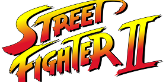
Street Fighter II (1991)
The fighting game revolution: Street Fighter II launched in 1991 and transformed gaming forever, turning arcades worldwide into competitive battlegrounds. With fast-paced controls, colorful characters, and the birth of the combo system, this game set the gold standard for all future fighting games.
Classic Moments & Milestones
- The invention of combos—allowing players to chain attacks for bigger damage.
- Unique international settings and diverse cast: Ryu, Ken, Chun-Li, Guile, Blanka, Dhalsim, Zangief, E. Honda. (Original 8 cast, more characters in “Super Street Fighter: The New Challengers” like -Cammy, Dee Jay, Fei Long, and T. Hawk in 1993)
- Sparked the global fighting game craze, inspiring tournaments and rival games.
Main Street Fighter II Versions
-
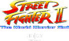
-
-
-
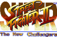
The Original 8 Characters
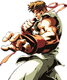
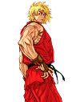
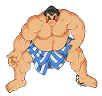
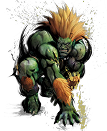
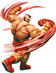
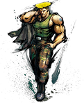
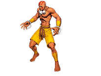
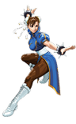